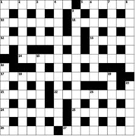

Crossword Numbering¶
Love solving a crossword puzzle?
This application takes a crossword grid without numbering and assigns the number to each cell.
This application uses the pattern used by The Hindu to number their crossword grids in order to give a numbered crossword grid.
Main Abstraction¶
The underlying abstraction in the problem is that a particular cell can be numbered only if it’s left and right neighbours are black or the above and below neighbours are black.
Eccentricities of the problem¶
The following are some eccetricities I noticed in the problem.
Implementing the underlying abstraction.¶
My application checks this condition using isClue() function:
def isClue(row, col): return grid[col - 1 : col + 2] == '#__' or grid[row - 1][col] + grid[row][col] + grid[row + 1][col] == '#__'
Modelling the crossword grid¶
I have modelled the crossword grid as a list of list or a matrix.
- The black squares are denoted by ‘#’.
- The white squares are denoted by ‘_’.
Handling the edge cases¶
The edge cases form the numbering of the first and the last row of the crossword grid. Instead of handling it separately, we add sentinnels to the ends. This helps us generalize the abstraction across all cells in the grid.
To sum up..¶
To view the code for the problem fork this repository.
Take the numbered grid given as an output and use it to challenge your friends!!